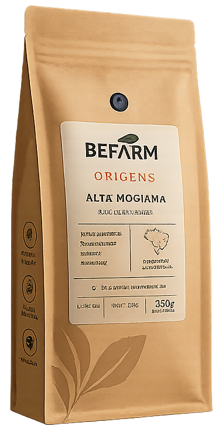

O BEFARM Origens Alta Mogiana é um café especial de grãos 100% arábica cultivado na tradicional região da Alta Mogiana. Com notas sensoriais de chocolate amargo, caramelo e frutas secas, este microlote selecionado de torra média apresenta corpo aveludado, acidez brilhante e doçura natural marcante. Rastreável da fazenda até a xícara.